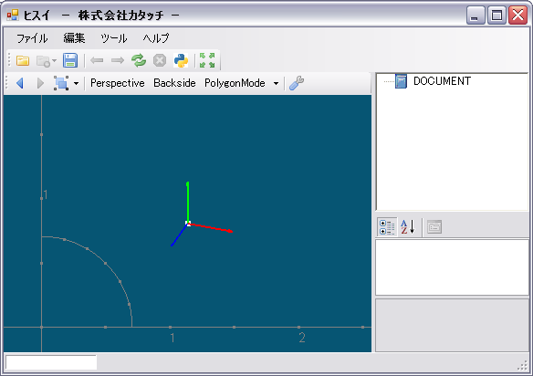
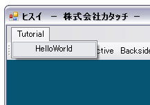

があります。これはビューの拡大率などをオブジェクトにフィットさせるコマンドです。試しに、ビューを拡大・縮小してからこのボタンをクリックしてみてください。
があります。これはビューの拡大率などをオブジェクトにフィットさせるコマンドです。試しに、ビューを拡大・縮小してからこのボタンをクリックしてみてください。
～ OpenGLプラットフォーム「ヒスイ」 チュートリアル ～
for ヒスイ ver 1.3
2007年6月25日
| hisui.exe | メインプログラム |
|
Hisui.Core.dll Hisui.Ctrl.dll Hisui.Geom.dll Hisui.Graphics.dll Hisui.Gui.dll Hisui.Hix.dll Hisui.SI.dll |
Hisui本体のアセンブリモジュール |
|
Hisui.Std.dll Hisui.Spatial.dll Hisui.Spatial.Formats.dll Hisui.Spatial.Commands.dll |
Hisuiの標準プラグイン |
|
IronMath.dll IronPython.dll |
IronPython(.NET上で動作するPython) |
| Naga.dll | IronPython 用のコンソールGUIツール |
| csgl.dll, csgl.native.dll | OpenGLをC#で使用するためのライブラリ
http://csgl.sourceforge.net/ |

| 回転 | マウス右ボタン |
| パン | Shift+マウス右ボタン |
| ズーム | Ctrl+マウス右ボタン ホイール |
static class Program
{
[System.STAThread]
static void Main()
{
Hisui.SI.SetUp( "config.xml" );
System.Windows.Forms.Application.Run( new Hisui.Gui.MainForm() );
}
}
設定ファイルとして config.xml を読み込んでいる部分が強調表示されています。
この config.xml は exe と同じフォルダに置く必要がありますので、bin/Debug と bin/Release の2箇所に配置されています。
では config.xml の中を見てみましょう。
<?xml version="1.0" encoding="Shift_JIS"?>
<config>
<plugin>
<include name="Hisui.Std.dll"/>
<include name="Hisui.Spatial.dll"/>
<include name="Hisui.Spatial.Commands.dll"/>
</plugin>
<command>
...
</command>
</config>
プラグインとしてロードするモジュールを指定していることが分かります。
これからチュートリアルで開発する Tutorial.exe をここに書き加えておきましょう。
config.xml は bin/Debug/ と bin/Release/ の2箇所にありますのでお忘れなく。
<?xml version="1.0" encoding="Shift_JIS"?>
<config>
<plugin>
...
<include name="Tutorial.exe"/>
</plugin>
...
</config>
namespace Tutorial
{
[Hisui.Ctrl.Command]
public class Class1 // ← このクラス名は何でも良い
{
[Hisui.Ctrl.Command]
class Tutorial
{
[Hisui.Ctrl.Command]
static void HelloWorld()
{
System.Windows.Forms.MessageBox.Show("Hello, World");
}
}
}
}
次のようなメニューが出るはずです。クリックしてメッセージボックスが表示されれば成功です。

この辺でプラグインの仕組みを簡単に解説します。肝は、クラスや関数に付与されている Hisui.Ctrl.Command 属性です。ヒスイはプラグインを読み込むと、各クラスの属性を調べます。Hisui.Ctrl.Command 属性が付いたクラスや関数はコマンドであると認識して、その関数をメニューに割り当てるのです。
ここでは Class1 に Command 属性が付いていますから、ヒスイは Class1 のメンバにコマンドがあるかもしれないと認識します。Class1 は単なるコマンドの「入れ物」に過ぎませんので、Class1 という名前は無視されます。また、Class1 がインスタンス化されることはなく、Class1 は static class でも構いません。
次に Tutorial クラスが読み込まれます。このように入れ子になったクラスは、サブメニューを保持するメニュー項目として処理されます。したがって、メインメニューには Tutorial という名前のメニューが作られ、そのサブメニューとして HelloWorld メニューが作られます。
最後に HelloWorld() 関数が処理されます。Command属性の付いた関数はメニュー項目と結び付けられ、メニュークリック時のイベントハンドラとしてその関数が登録されます。重要な注意点として、このようなコマンド関数は static である必要があります。
...
[Hisui.Ctrl.Command("チュートリアル")]
class Tutorial
{
[Hisui.Ctrl.Command("こんにちは")]
static void HelloWorld()
{
...
メニュー名は設定ファイルでも変更できます。 上記修正の代わりに、下記のように config.xml を書き加えてください。
<?xml version="1.0" encoding="Shift_JIS"?>
<config>
<plugin>
...
</plugin>
<command>
...
<caption name="Tutorial">チュートリアル</caption>
<caption name="Tutorial.HelloWorld">こんにちは</caption>
</command>
</config>
[Hisui.Ctrl.Command("直線作図")]
static void DrawLine()
{
}
[Hisui.Ctrl.Command("直線作図")]
static void DrawLine( Hisui.Ctrl.IContext con )
{
}
コンテキスト情報からは View オブジェクトを取得することが出来ます。その View に直線シーンを追加したいのです。
ではいよいよ直線を描画してみましょう。ここでは原点から (1, 1, 1) までの直線を描画することにします。
描画には OpenGL を用います。ヒスイでは OpenGL を C# で利用するためのライブラリとして CsGL（http://csgl.sourceforge.net/）を利用しています。ファイルの先頭で using CsGL.OpenGL ; と記述してください。
次のように、con.View.SceneGraph.WorldScenes に直線を描画する匿名メソッド（delegate）を追加します。なお、匿名メソッドの引数 ISceneContext はここでは使いませんので、今は気にしないでください。
using CsGL.OpenGL ;
...
[Hisui.Ctrl.Command("直線作図")]
static void DrawLine( Hisui.Ctrl.IContext con )
{
con.View.SceneGraph.WorldScenes.Add(
delegate(Hisui.Graphics.ISceneContext sc)
{
GL.glBegin(GL.GL_LINES);
GL.glVertex3d(0, 0, 0);
GL.glVertex3d(1, 1, 1);
GL.glEnd();
}
);
}
![[図05-01:直線]](fig05_01.png)
直線が表示されたら、ビューを回転したり拡大したりして遊んでみましょう(^^;
匿名メソッドでも描画できるのですが、今後の拡張のためにキチンとSceneクラスを作ることにしましょう。Sceneクラスは Hisui.Graphics.IScene インターフェイスを実装することで作ることが出来ます。IScene インターフェイスは次のように定義されています。
namespace Hisui.Graphics
{
public interface IScene
{
void Draw( ISceneContext context ) ;
}
}
シンプルですね。Draw()メソッドがひとつあるだけです。これを実装するとこうなります。
class LineScene : Hisui.Graphics.IScene
{
public void Draw(Hisui.Graphics.ISceneContext sc)
{
GL.glBegin(GL.GL_LINES);
GL.glVertex3d(0, 0, 0);
GL.glVertex3d(1, 1, 1);
GL.glEnd();
}
}
DrawLine() コマンドを次のように書き換えます。
con.View.SceneGraph.WorldScenes.Add(new LineScene());
直線の始点、終点がハードコーディングされているのはカッコ悪いので、次のように修正しておきましょう。
class LineScene : Hisui.Graphics.IScene
{
Hisui.Geom.Point3d _p1;
Hisui.Geom.Point3d _p2;
public LineScene(Hisui.Geom.Point3d p1, Hisui.Geom.Point3d p2)
{
_p1 = p1;
_p2 = p2;
}
public void Draw(Hisui.Graphics.ISceneContext sc)
{
GL.glBegin(GL.GL_LINES);
GL.glVertex3d(_p1.x, _p1.y, _p1.z);
GL.glVertex3d(_p2.x, _p2.y, _p2.z);
GL.glEnd();
}
}
DrawLine() コマンドは次のようになります。
Hisui.Geom.Point3d p1 = new Hisui.Geom.Point3d(0, 0, 0);
Hisui.Geom.Point3d p2 = new Hisui.Geom.Point3d(1, 1, 1);
con.View.SceneGraph.WorldScenes.Add(new LineScene(p1, p2));
ツールバーにこんなアイコン があります。これはビューの拡大率などをオブジェクトにフィットさせるコマンドです。試しに、ビューを拡大・縮小してからこのボタンをクリックしてみてください。
DrawLine() を次のように書き換えて、長ーい直線にしてみてください。
Hisui.Geom.Point3d p1 = new Hisui.Geom.Point3d(0, 0, 0);
Hisui.Geom.Point3d p2 = new Hisui.Geom.Point3d(100, 100, 100);
con.View.SceneGraph.WorldScenes.Add(new LineScene(p1, p2));
これでフィットボタンを押しても、画面が長い直線にフィットしません。それどころか、長い直線が途中で切れてしまい、直線全体が描画できていないことが分かります。これは少しビューを回転してみると良く分かると思います。
フィットさせるためには、描画しているオブジェクトの「大きさ」をフレームワーク側に伝える必要があります。正確にはオブジェクトの境界ボックスや境界球が必要です。オブジェクトの大きさが分からないと、画面フィットをしようにも情報が足らないのです。
LineScene の境界情報を伝えるためには、LineScene に Hisui.Geom.IBoundary3d インターフェイスを実装します。IBoundary3d インターフェイスは次のように定義されています。
namespace Hisui.Geom
{
public interface IBoundary3d
{
Box3d BoundingBox { get ; } // 境界ボックスを返す
Sphere3d BoundingSphere { get ; } // 境界球を返す
}
}
これを実装すると、LineScene はこうなります。
class LineScene : Hisui.Graphics.IScene, Hisui.Geom.IBoundary3d
{
Hisui.Geom.Point3d _p1;
Hisui.Geom.Point3d _p2;
...
public Hisui.Geom.Box3d BoundingBox
{
get { return new Hisui.Geom.Box3d(_p1, _p2); }
}
public Hisui.Geom.Sphere3d BoundingSphere
{
get
{
return new Hisui.Geom.Sphere3d(
Hisui.Geom.Point3d.Interpolate(_p1, _p2),
0.5 * (_p2 - _p1).Length
);
}
}
}
これでもう一度フィットボタンを押してみましょう。きちんとフィットされましたか？
画面右のツリービューを見て下さい。DOCUMENT と書かれたノードがあるかと思います。そうです、ここにドキュメントのツリー構造が表示されるのです。
しかし、今までに作った直線描画コマンドを動かしても、DOCUMENTツリーは空のままです。というのは、今まで作ってきたのはあくまでシーンの登録に過ぎないわけで、直線エンティティがドキュメントに登録されているわけではないからなのです。
特にエンティティだからといって何か特別なクラスを継承する必要ありません。フツーに直線クラスを定義します。つまり PONO (Plain Old .NET Object; POJO の .NET 版) で良いのです。
class Line
{
Hisui.Geom.Point3d _p1;
Hisui.Geom.Point3d _p2;
public Hisui.Geom.Point3d P1
{
get { return _p1; }
set { _p1 = value; }
}
public Hisui.Geom.Point3d P2
{
get { return _p2; }
set { _p2 = value; }
}
public Line(Hisui.Geom.Point3d p1, Hisui.Geom.Point3d p2)
{
_p1 = p1;
_p2 = p2;
}
}
これをドキュメントに登録しましょう。DrawLine()コマンドを次のように書き換えます。
[Hisui.Ctrl.Command("直線作図")]
static void DrawLine(Hisui.Ctrl.IContext con)
{
Hisui.Geom.Point3d p1 = new Hisui.Geom.Point3d(0, 0, 0);
Hisui.Geom.Point3d p2 = new Hisui.Geom.Point3d(100, 100, 100);
con.Document.Entries.Put(new Line(p1, p2));
// con.View.SceneGraph.WorldScenes.Add(new LineScene(p1, p2));
}
コマンドを起動してください。次のようにツリービューに登録されたら成功です。
![[図07-01: ツリービュー]](fig07_01.png)
でも、肝心の描画が消えてしまいました。これではビューには何も描画されません。次は Line エンティティが描画されるように LineScene クラスを書き換えていくことにします。
LineScene クラスを書き換えましょう。一番重要なことは、Hisui.Graphics.Scene属性を付けることです。
[Hisui.Graphics.Scene(typeof(Line))]
class LineScene : Hisui.Graphics.IScene, Hisui.Geom.IBoundary3d
{
...
}
このように、typeof(Line) を引数に渡して Scene 属性をつけます。こうすることで LineScene クラスが Line エンティティに対応するシーンとしてバインドされます。
次に、メンバ変数として両端点 _p1, _p2 の代わりに、描画対象の Line エンティティを参照するようにします。
[Hisui.Graphics.Scene(typeof(Line))]
class LineScene : Hisui.Graphics.IScene, Hisui.Geom.IBoundary3d
{
Line _line;
public LineScene(Line line)
{
_line = line;
}
...
}
これに合わせて、メソッドの実装も書き換えてください。たとえば Draw() メソッドはこうなります。
public void Draw(Hisui.Graphics.ISceneContext sc)
{
GL.glBegin(GL.GL_LINES);
GL.glVertex3d(_line.P1.x, _line.P1.y, _line.P1.z);
GL.glVertex3d(_line.P2.x, _line.P2.y, _line.P2.z);
GL.glEnd();
}
これでコマンドを実行してみましょう。直線が描画されるはずです。
今のところ IBoundary3d は LineScene に実装されています。しかし、IBoundary3d は Line が実装するほうがより自然だと思いませんか。というわけで、IBoundary3d の実装は LineScene から Line に移してしまいましょう。それでも画面フィットは正しく動作しますから大丈夫です。
class Line : Hisui.Geom.IBoundary3d
{
...
public Hisui.Geom.Box3d BoundingBox
{
get { return new Hisui.Geom.Box3d(P1, P2); }
}
public Hisui.Geom.Sphere3d BoundingSphere
{
get
{
return new Hisui.Geom.Sphere3d(
Hisui.Geom.Point3d.Interpolate(P1, P2),
0.5 * (P2 - P1).Length
);
}
}
}
MVCパターンというアーキテクチャパターンがあります。アプリケーションを作るときには
直線は作成できるようになりましたが、両端点の座標は決め打ちされています。マウスで自由に作図できるようにコマンドを修正しましょう。具体的には、マウスで２点をクリックするとその２点間に直線が作成される作図コマンドを作ります。
![[図08-01:状態遷移図]](fig08_01.png)
ヒスイでは、この状態遷移を IEnumerator を用いて次のようにあらわします。
IEnumerator<状態>IEnumerator<> は System.Collections.Generic に用意されているイテレータです。IEnumerator<状態>.Current は現在の状態を返し、IEnumerator<状態>.MoveNext() で次の状態への遷移を表すのです。これを用いて、直線作図コマンド DrawLine() は次のように表せます。
static IEnumerator<状態> DrawLine(Hisui.Ctrl.IContext con)
{
yield return クリック待ち状態 ; // １点目
yield return クリック待ち状態 ; // ２点目
直線の作成 ;
}
なお、yield return は C#2.0 で新たに加わった新機能です。これを使うと IEnumerator オブジェクトが簡単に作成できます。ご存じない方はインターネットで "C# yield" などを検索してみてください。多くの解説ページが見つかると思います。
DrawLine() コマンドを次のように書き換えます。
[Hisui.Ctrl.Command("直線作図")]
static IEnumerator<Hisui.Ctrl.IOperation> DrawLine(Hisui.Ctrl.IContext con)
{
Hisui.Ctrl.LButtonClick click1 = new Hisui.Ctrl.LButtonClick(con.View.Events);
Hisui.Ctrl.LButtonClick click2 = new Hisui.Ctrl.LButtonClick(con.View.Events);
yield return click1;
yield return click2;
Hisui.Geom.Point3d p1 = new Hisui.Geom.Point3d(0, 0, 0);
Hisui.Geom.Point3d p2 = new Hisui.Geom.Point3d(100, 100, 100);
con.Document.Entries.Put(new Line(p1, p2));
}
Hisui.Ctrl.IOperation がオペレーションの状態を表すインターフェイスです。この IEnumerator を返すことで作図コマンドの状態遷移を表します。
Hisui.Ctrl.LButtonClick はマウス左ボタンのクリック待ち状態を表すクラスです。click1 が1点目、click2 が2点目のクリックです。
では早速起動してみましょう。コマンドを起動しても、すぐには直線が描画されません。ここでビュー上で適当に２回クリックすると、直線が作図されると思います。
現状では、マウスのクリック位置とは無関係な直線が作図されてしまいます。ちゃんとクリック位置を使って直線を作図するように修正しましょう。
まずマウスのクリック位置を取得します。
System.Drawing.Point pt1 = click1.EventArgs.Location;
System.Drawing.Point pt2 = click2.EventArgs.Location;
pt1, pt2 はスクリーン座標の点ですから、これをワールド座標に変換する必要があります。これには con.View.Camera オブジェクトを使います。Camera にはワールド座標をどのような向きからどのような大きさで「撮影」しているかを表す情報が格納されています。次のコードでスクリーン座標をワールド座標に変換することができます。
Hisui.Geom.Point3d p1 = con.View.Camera.ScreenToWorld(pt1);
Hisui.Geom.Point3d p2 = con.View.Camera.ScreenToWorld(pt2);
この p1, p2 を元に Line オブジェクトを new すればOKです。以下に DrawLine() コマンド全体を載せておきます。
[Hisui.Ctrl.Command("直線作図")]
static IEnumerator<Hisui.Ctrl.IOperation> DrawLine(Hisui.Ctrl.IContext con)
{
Hisui.Ctrl.LButtonClick click1 = new Hisui.Ctrl.LButtonClick(con.View.Events);
Hisui.Ctrl.LButtonClick click2 = new Hisui.Ctrl.LButtonClick(con.View.Events);
yield return click1;
yield return click2;
System.Drawing.Point pt1 = click1.EventArgs.Location;
System.Drawing.Point pt2 = click2.EventArgs.Location;
Hisui.Geom.Point3d p1 = con.View.Camera.ScreenToWorld(pt1);
Hisui.Geom.Point3d p2 = con.View.Camera.ScreenToWorld(pt2);
con.Document.Entries.Put(new Line(p1, p2));
}
ユーザーインターフェイスを考えると、2点目のクリック待ちのときには直線のプレビュー表示（ラバーバンド）が欲しいものです。これを考慮すると、状態遷移図は次のように書き直されます。
![[図09-01: 状態遷移図]](fig09_01.png)
これにしたがってコードを書き換えると、次のようになります。
using System.Windows.Forms;
[Hisui.Ctrl.Command("直線作図")]
static IEnumerator<Hisui.Ctrl.IOperation> DrawLine(Hisui.Ctrl.IContext con)
{
Hisui.Ctrl.LButtonClick click1 = new Hisui.Ctrl.LButtonClick(con.View.Events);
Hisui.Ctrl.LButtonClick click2 = new Hisui.Ctrl.LButtonClick(con.View.Events);
yield return click1;
// ① 直線を作成
System.Drawing.Point pt1 = click1.EventArgs.Location;
Hisui.Geom.Point3d p1 = con.View.Camera.ScreenToWorld(pt1);
Line line = new Line(p1, p1);
// ② ラバーバンド用のシーンを登録
con.WorldScenes.Add( new LineScene( line ) ) ;
// ③ MouseMove で直線を更新
click2.MouseMove +=
delegate(object sender, MouseEventArgs e)
{
line.P2 = con.View.Camera.ScreenToWorld(e.Location);
con.View.Refresh();
};
yield return click2;
con.Document.Entries.Put(line);
}
以下、順に解説していきます。
1点目のクリックが終わった時点で Line エンティティを作成してしまいます。この時点では2点目の座標は得られていないので、始点・終点共に p1 の直線オブジェクトを作ります。
ラバーバンド用のシーンとして LineScene を登録します。ここで登録先が con.View.SceneGraph.WorldScenes ではなく、con.WorldScenes であることに注意してください。con.WorldScenes はこのコマンド実行中のコンテキストでのみ有効なシーンです。このコマンドから抜ける時点で con.WorldScenes は自動的にクリアされます。
2点目のクリック待ちでは、マウスの動きに合わせて直線を更新する必要があります。そのためには、click2.MouseMove イベントにイベントハンドラを登録します。このイベントはクリック待ち状態でのみ有効で、クリックが終わった時点でこのハンドラも解除されます。
中の処理は簡単で、現在のマウス位置からワールド座標に変換し、直線の終点座標を更新します。
作図した直線をクリックすると、コンテキストメニューが表示されます。このコンテキストメニューに独自のコマンドを追加してみましょう。次のようなコマンド関数を作成します。
[Hisui.Ctrl.Command]
public class Class1
{
[Hisui.Ctrl.Command("端点の移動")]
static void MovePointOfLine(Line self, Hisui.Ctrl.IContext con)
{
MessageBox.Show("コンテキストメニュー");
}
}
コマンド関数の第一引数として Line エンティティを受けているところに注目してください。ヒスイはコマンド関数の第一引数をチェックし、このコマンド関数を Line エンティティのコンテキストメニューに自動的にバインドします。起動してみて、コンテキストメニューを確認してください。
端点移動のオペレーションを作成します。仕様は、端点位置でマウス左ボタンを押し、そのままマウスをドラッグさせてボタンを離した位置に端点を移動するものとします。状態遷移図は次のようになります。
![[図10-01:状態遷移図]](fig10_01.png)
まずはラバーバンドは考慮しないで作っていきましょう。
[Hisui.Ctrl.Command("端点の移動")]
static IEnumerator<Hisui.Ctrl.IOperation>
MovePointOfLine(Line self, Hisui.Ctrl.IContext con)
{
Hisui.Ctrl.LButtonDown down = new Hisui.Ctrl.LButtonDown(con.View.Events);
Hisui.Ctrl.LButtonUp up = new Hisui.Ctrl.LButtonUp(con.View.Events);
yield return down;
yield return up;
Hisui.Geom.Point2i pt1 = new Hisui.Geom.Point2i(down.EventArgs.Location);
Hisui.Geom.Point2i pt2 = new Hisui.Geom.Point2i(up.EventArgs.Location);
Hisui.Graphics.ICamera camera = con.View.Camera;
Hisui.Geom.Line3d eyeshot = camera.GetEyeshotLine(pt1);
if (eyeshot.Distance(self.P1) < 8 * camera.LengthPerPixel)
{
self.P1 += camera.ScreenToWorld(pt2 - pt1);
}
else if (eyeshot.Distance(self.P2) < 8 * camera.LengthPerPixel)
{
self.P2 += camera.ScreenToWorld(pt2 - pt1);
}
}
camera.GetEyeshotLine(pt1) は pt1 を通過する視線を返します。また、camera.LengthPerPixel は１ピクセルあたりのワールド座標系での長さを返します。
以下のコードで、ラバーバンド（端点移動のプレビュー表示）が有効になります。
[Hisui.Ctrl.Command("端点の移動")]
static IEnumerator<Hisui.Ctrl.IOperation>
MovePointOfLine(Line self, Hisui.Ctrl.IContext con)
{
Hisui.Ctrl.LButtonDown down = new Hisui.Ctrl.LButtonDown(con.View.Events);
Hisui.Ctrl.LButtonUp up = new Hisui.Ctrl.LButtonUp(con.View.Events);
yield return down;
Hisui.Geom.Point2i pt1 = new Hisui.Geom.Point2i(down.EventArgs.Location);
Hisui.Graphics.ICamera camera = con.View.Camera;
Hisui.Geom.Line3d eyeshot = camera.GetEyeshotLine(pt1);
if (eyeshot.Distance(self.P1) < 8 * camera.LengthPerPixel)
{
Hisui.Geom.Point3d p1 = self.P1;
up.MouseMove +=
delegate(object sender, MouseEventArgs e)
{
Hisui.Geom.Point2i pt2 = new Hisui.Geom.Point2i(e.Location);
self.P1 = p1 + camera.ScreenToWorld(pt2 - pt1);
con.View.Refresh();
};
yield return up;
}
else if (eyeshot.Distance(self.P2) < 8 * camera.LengthPerPixel)
{
Hisui.Geom.Point3d p2 = self.P2;
up.MouseMove +=
delegate(object sender, MouseEventArgs e)
{
Hisui.Geom.Point2i pt2 = new Hisui.Geom.Point2i(e.Location);
self.P2 = p2 + camera.ScreenToWorld(pt2 - pt1);
con.View.Refresh();
};
yield return up;
}
}
上記のコードに新しい知識はありません。今までの知識で理解できるはずですので、読み解いてみてください。
このコマンドでは、端点を連続して移動することができません。一度端点を移動したら、次は再びコマンドを起動しなおす必要があります。しかし、コマンドによっては連続してオペレーションを繰り返したい場合もあるでしょう。そのためには、Command 属性を次のようにします。
[Hisui.Ctrl.Command("端点の移動",true)]
第２引数は iterative かどうかを指定する引数で、true を指定すると繰り返しコマンドになります。連続して移動操作ができることを確認してみてください。なお、コマンドから抜けるには ESC キーを押します。
では直線を作図するコマンドをツールバーから起動できるようにしましょう。まずプロジェクトに「新しい項目の追加」でユーザーコントロールを追加します。そして、下図のように ToolStrip コンポーネントを配置し、ボタンをひとつ追加します。
![[図11-01:ユーザーコントロール]](fig11_01.png)
次に、追加したボタンの Tag プロパティに "Tutorial.DrawLine" と入力します。
![[図11-01:Tagプロパティ]](fig11_02.png)
最後に、このユーザーコントロールに ToolStrip 属性を付けます。
[Hisui.Ctrl.ToolStrip]
public partial class UserControl1 : UserControl
{
...
以上でツールバーが追加され、ボタンに DrawLine コマンドがバインドされます。
Undo、Redo は次のボタンで操作できます。
 ... Undo
... Undo
 ... Redo
... Redo
では直線を作図して、Undo や Redo を試してみましょう。Undo すると作図した直線が削除され、Redo で復活することが分かると思います。
では「端点の移動」コマンドは Undo/Redo できるでしょうか。残念ながらこのままでは Undo/Redo できません。Line クラスに Undo/Redo 用の細工が必要です。
Undo/Redo のためには Line クラスが Hisui.Core.IMemorable インターフェイスを実装する必要があります。まずはインターフェイスの定義を見てみましょう。
namespace Hisui.Core
{
public interface IMemorable
{
void AddRef() ;
void Release() ;
}
}
メソッドの名前から類推できると思いますが、IMemorable はリファレンスカウンタのインターフェイスです。エンティティをドキュメントに追加すると AddRef() が呼ばれ、参照カウンタがインクリメントされます。逆にエンティティがドキュメントから削除されると、参照カウンタがデクリメントされます。参照カウンタが１以上の状態が memorable （忘れられない、記憶すべき）な状態、すなわち変更履歴が記憶される状態です。参照カウンタ方式を採用したのは、１つのエンティティが重複してドキュメントに登録される可能性を考慮したためです。
具体的な実装に入る前に、直線の端点移動を例に Undo 処理の概略を説明しておきます。
重要なのは、Memento が生成されるのは
エンティティがドキュメントに登録されている場合ということです。したがって
かつ
エンティティが変更された場合
しかし、今回の例題では Memento クラスとして MementoByBackup<TBackup> という既に用意されているクラスを使うことにしましょう。これを使うと、実装手順は次のようになります。
ではいよいよ実装を開始しましょう。Undo/Redo の実装はエンティティ本体とは concern が異なりますので、partial class を作ってそちらに実装することにします。
// こちらがエンティティ本体
partial class Line : Hisui.Geom.IBoundary3d
{
...
}
// こちらが Undo/Redo 用のコード
partial class Line : Hisui.Core.IMemorable
{
void Hisui.Core.IMemorable.AddRef()
{
}
void Hisui.Core.IMemorable.Release()
{
}
}
次のように Backup クラスを定義します。直線の端点座標をバックアップ/リカバリするコードを記述します。
partial class Line : Hisui.Core.IMemorable
{
class Backup : Hisui.Core.Backup<Line>
{
Hisui.Geom.Point3d _p1;
Hisui.Geom.Point3d _p2;
protected override void BackupFrom(Line src)
{
_p1 = src._p1;
_p2 = src._p2;
}
protected override void RecoveryTo(Line dst)
{
dst._p1 = _p1;
dst._p2 = _p2;
}
}
...
}
注意事項です。RecoveryTo() 関数では、dst のプライベートフィールド _p1, _p2 に直接代入する必要があります（※ Backup は Line のインナークラスであるため、Line のプライベートフィールドにアクセス可能です）。パブリックプロパティ P1, P2 を介して代入してはいけません。その理由は２つ下の項目「エンティティの変更を通知」で説明します。
次のように Memorable<MementoByBackup<Backup>> を利用して IMemorable インターフェイスを実装します。
partial class Line : Hisui.Core.IMemorable
{
class Backup : Hisui.Core.Backup<Line>
{
...
}
Hisui.Core.Memorable<Hisui.Core.MementoByBackup<Backup>> _memorable;
void Hisui.Core.IMemorable.AddRef()
{
_memorable.AddRef();
}
void Hisui.Core.IMemorable.Release()
{
_memorable.Release();
}
}
端点座標が変更される直前に、次のような変更通知のコードを挿入します。
partial class Line : Hisui.Geom.IBoundary3d
{
...
public Hisui.Geom.Point3d P1
{
get { return _p1; }
set {
_memorable.StartEdit(this); // 変更の通知
_p1 = value;
}
}
public Hisui.Geom.Point3d P2
{
get { return _p2; }
set {
_memorable.StartEdit(this); // 変更の通知
_p2 = value;
}
}
...
}
このように、プロパティ P1, P2 への代入時には変更の通知が行われます。これが「Backupクラスの作成」で「RecoveryTo() では P1, P2 を介して代入してはいけない」と書いた理由です。RecoveryTo() は Undo/Redo 時に動作する関数であり、Undo/Redo 時に変更の通知が行われてしまうと履歴が壊れてしまうのです。
以上で Undo/Redo の実装は終了です。早速起動して、端点移動が Undo/Redo できるか試してみましょう。
ヒスイは、ドキュメントを XML 形式で保存する機能を備えています。このファイル形式を HiX (Hisui XML) と呼びます。HiX ではシリアライズ機能を各エンティティごとにプラグインできるようになっています。準備として、各プロジェクトの参照設定で Hisui.Hix.dll を登録しておいてください。
エンティティのシリアライズ方法には次の3つがあります。
では上から順に見ていくことにしましょう。
上の2つの条件を満たすように、Line クラスを public にして引数なしのコンストラクタも加えておきましょう。
public partial class Line : Hisui.Geom.IBoundary3d
{
...
public Line() {}
...
}
必要な作業はこれだけです。[File | Save] メニューかツールバーの ![[save]](save.png) で早速保存してみましょう。次のような XML ファイルが出力されるはずです。
で早速保存してみましょう。次のような XML ファイルが出力されるはずです。
<?xml version="1.0" encoding="utf-8"?>
<document>
<index>
<entry id="1" ref="1" />
</index>
<body>
<object
name="1"
type="Tutorial.Line, Tutorial, Version=1.0.0.0, Culture=neutral, PublicKeyToken=null">
<Line
xmlns:xsi="http://www.w3.org/2001/XMLSchema-instance"
xmlns:xsd="http://www.w3.org/2001/XMLSchema">
<P1>
<x>-0.49006622516556292</x>
<y>0.73841059602649006</y>
<z>0</z>
</P1>
<P2>
<x>0.51655629139072845</x>
<y>0.28807947019867547</y>
<z>0</z>
</P2>
</Line>
</object>
</body>
</document>
Line オブジェクトは <object name="1" ...> ～ </object> に埋め込まれています。
この場合は、シリアル化のコードと逆シリアル化のコードを書く必要があります。言い換えれば、そのコーディングによってシリアライズ方法を制御することができます。
まずはシリアル化から。次のように [Serializable] 属性を付け、ISerializable インターフェイスを実装します。
using System.Runtime.Serialization;
...
[System.Serializable]
partial class Line : ISerializable
{
...
public void GetObjectData(SerializationInfo info, StreamingContext context)
{
info.AddValue("x1", _p1.x);
info.AddValue("y1", _p1.y);
info.AddValue("z1", _p1.z);
info.AddValue("x2", _p2.x);
info.AddValue("y2", _p2.y);
info.AddValue("z2", _p2.z);
}
}
続いて逆シリアル化。次のようなコンストラクタを用意します。
[System.Serializable]
partial class Line : ISerializable
{
Line(SerializationInfo info, StreamingContext context)
{
_p1.x = info.GetDouble("x1");
_p1.y = info.GetDouble("y1");
_p1.z = info.GetDouble("z1");
_p2.x = info.GetDouble("x2");
_p2.y = info.GetDouble("y2");
_p2.z = info.GetDouble("z2");
}
...
}
保存すると、Line オブジェクトは次のように出力されます。
<SOAP-ENV:Envelope
xmlns:xsi="http://www.w3.org/2001/XMLSchema-instance"
xmlns:xsd="http://www.w3.org/2001/XMLSchema"
xmlns:SOAP-ENC="http://schemas.xmlsoap.org/soap/encoding/"
xmlns:SOAP-ENV="http://schemas.xmlsoap.org/soap/envelope/"
xmlns:clr="http://schemas.microsoft.com/soap/encoding/clr/1.0"
SOAP-ENV:encodingStyle="http://schemas.xmlsoap.org/soap/encoding/">
<SOAP-ENV:Body>
<a1:Line
id="ref-1"
xmlns:a1="http://schemas.microsoft.com/clr/nsassem/Tutorial/Tutorial
%2C%20Version%3D1.0.0.0%2C%20Culture%3Dneutral%2C%20PublicKeyToken%3Dnull">
<x1>-0.48675496688741721</x1>
<y1>0.609271523178808</y1>
<z1>0</z1>
<x2>0.54635761589403975</x2>
<y2>0.26821192052980131</y2>
<z2>0</z2>
</a1:Line>
</SOAP-ENV:Body>
</SOAP-ENV:Envelope>
ではいよいよ、Hisui.Hix.ISerializer インターフェイスを実装する方法を解説します。この方法では、 Line エンティティとは別に Serializer クラスを用意し、プラグインすることができます。上記の２つと比べて若干手間はかかりますが、もっとも自由にシリアライズ方法を制御できる方法です。
やりかたは Scene クラスの作成と似ています。次のコードが Serializer クラスの雛形となります。
using System.Xml;
...
[Hisui.Hix.Serializer(typeof(Line))]
class LineSerializer : Hisui.Hix.ISerializer
{
Line _line;
public object Target
{
get { return _line; }
set { _line = (Line)value; }
}
public IEnumerable<object> References
{
get { yield break; }
}
public void Write(XmlWriter writer, Hisui.Hix.INameResolver names)
{
}
public void Read(XmlReader reader, Hisui.Hix.IReferenceResolver refs)
{
}
}
XMLにシリアライズするコードを Write() に、XML からデシリアライズするコードを Read() に記述します。まずは Write() のコードを見ていきます。
...
public void Write(XmlWriter writer, Hisui.Hix.INameResolver names)
{
writer.WriteStartElement("p1");
Hisui.Hix.Util.Write(writer, _line.P1);
writer.WriteEndElement();
writer.WriteStartElement("p2");
Hisui.Hix.Util.Write(writer, _line.P2);
writer.WriteEndElement();
}
...
このコードで使用している Hisui.Hix.Util.Write() という関数は、ヒスイで用意しているシリアライズ用のユーティリティです。Hisui.Hix.Util にはプリミティブなデータのシリアライズ関数がいくつか用意されています。
出力の形式には特に決まりはないので、自由にXMLのフォーマットを設計して出力してください。上記のコードでは次のようなシンプルですっきりとした出力結果が得られます。
<object name="1" type="Tutorial.Line">
<p1>-0.443708609271523 0.76158940397351 0</p1>
<p2>0.622516556291391 0.271523178807947 0</p2>
</object>
次に読み込み側 Read() を作ります。
public void Read(XmlReader reader, Hisui.Hix.IReferenceResolver refs)
{
Hisui.Geom.Point3d p1, p2;
reader.ReadToFollowing("p1");
Hisui.Hix.Util.Read(reader, out p1);
reader.ReadToFollowing("p2");
Hisui.Hix.Util.Read(reader, out p2);
_line = new Line(p1, p2);
}
書き出し及び読み込みを確認してみてください。
Copyright © 2006, 株式会社カタッチ
http://www.quatouch.com